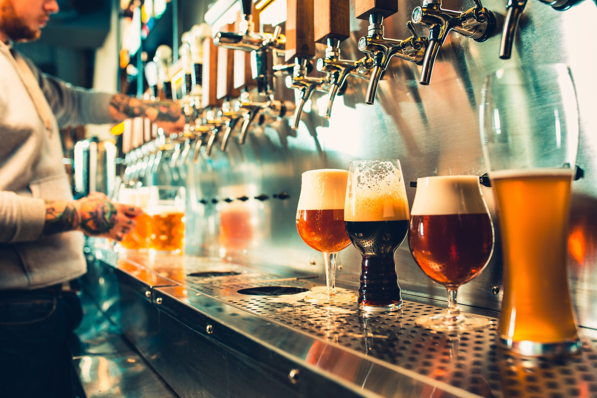
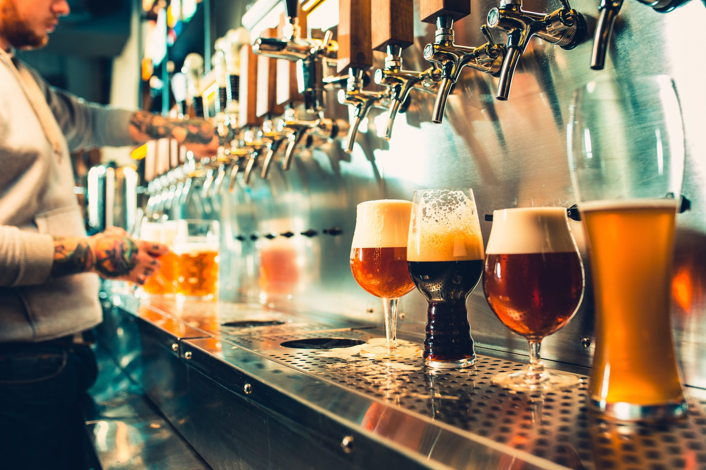

Bullbeer es una cerveceria artesanal la cual nace en el año 2019 en la ciudad de Progreso, departamento de Canelones, Uruguay. En un rincón donde el tiempo se funde con la espuma, donde el lúpulo baila con el viento y la malta susurra historias, se alza la cervecería, un templo de fuego y alquimia, donde manos pacientes moldean el oro líquido de la tierra.
Aquí, el agua canta en los calderos de cobre, los granos despiertan en un abrazo tibio de hervor, y el lúpulo, alma verde de la espuma, deja su esencia en cada sorbo, en cada memoria. Las barricas susurran secretos en la penumbra, madurando el tiempo en notas de madera y miel, y en cada vaso servido, una historia nace, un brindis se eleva, una amistad florece.
Es más que cerveza, es un arte, un ritual, una oda a la paciencia, a la pasión, a la tierra misma. Porque en esta cervecería artesanal, cada gota es un poema dorado esperando ser contado.
 
